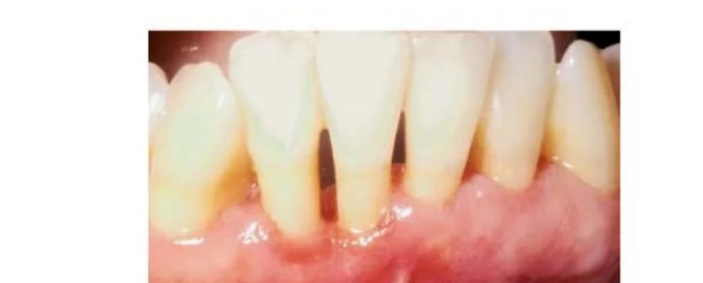
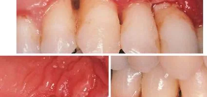
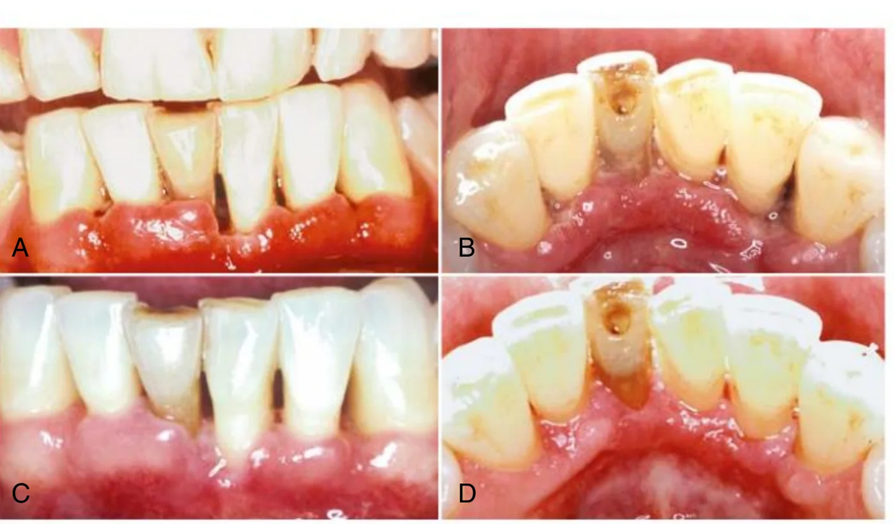

نسخه استخراجشده؛ ترجمه یا تأیید علمی انجام نشده است. وضعیت: captured
ضایعات دهانی گاهی نخستین نشانه عفونت HIV تشخیصدادهنشدهاند. دندانپزشک میتواند اولین کسی باشد که به آن مشکوک میشود — و همین، این درس را از یک بحث نظری به یک مسئولیت بالینی تبدیل میکند.

| ضایعه | نشانه کلیدی |
|---|---|
| اریتم خطی لثه (LGE) | نوار قرمز درخشان ۲ تا ۳ میلیمتری در امتداد مارجین لثه |
| ژنژیویت نکروزان (NG) | نکروز پاپیلا و درد، بدون از دست رفتن چسبندگی |
| پریودنتیت نکروزان (NP) | نکروز همراه با از دست رفتن سریع چسبندگی و استخوان |
📌 هر ژنژیویتی که به درمان استاندارد پاسخ ندهد، باید تو را به فکر یک زمینه سیستمیک بیندازد.
شدیدترین شکل درگیری پریودنتال در نقص ایمنی. سرعت تخریب آن با هیچ فرم دیگری قابل مقایسه نیست.

| ویژگی | پریودنتیت نکروزان در HIV |
|---|---|
| سرعت | 🔴 از دست رفتن چسبندگی و استخوان ظرف هفتهها، نه سالها |
| درد | عمیق، شدید و «درد استخوان» — برخلاف پریودنتیت معمول که بیسروصداست |
| ظاهر | نکروز، برهنه شدن استخوان و گاه جدا شدن قطعهی استخوان (سکستر) |
| ارتباط با CD4 | با شمارش CD4 پایین و بار ویروسی بالا همراه است |
⚠️ خطر جدی: پریودنتیت نکروزان میتواند به استوماتیت نکروزان پیشرفت کند که فراتر از اتصال موکوژنژیوال (MGJ) گسترش مییابد و به نکروز وسیع بافت و استخوان میانجامد.
⚠️ اشتباه رایج ۱: در فاز حاد نکروزان، جرمگیری کامل و تهاجمی ممنوع است؛ ابتدا التهاب و درد را کنترل کن.
⚠️ اشتباه رایج ۲: آنتیبیوتیک وسیعالطیف در این بیماران میتواند کاندیدیازیس را شعلهور کند؛ مترونیدازول ترجیح دارد.
| شاخص | معنی بالینی |
|---|---|
| شمارش CD4 | زیر ۲۰۰ سلول در میکرولیتر: نقص ایمنی شدید و خطر عفونت فرصتطلب |
| بار ویروسی | غیرقابلشناسایی: کنترل خوب و خطر انتقال بسیار پایین |
| شمارش نوتروفیل | زیر ۵۰۰: احتیاط جدی در هر عمل تهاجمی |
| شمارش پلاکت | زیر ۶۰ هزار: خطر خونریزی در جراحی |
همین چارچوب برای بیماران تحت شیمیدرمانی، پیوند عضو و مصرف طولانی کورتیکواستروئید هم به کار میرود: قبل از هر مداخله، شمارش سلولی را بپرس و با پزشک هماهنگ کن.

⚠️ اشتباه رایج ۳: HIV مثبت بودن بهتنهایی کنترااندیکاسیون جراحی پریودنتال نیست.
⚠️ اشتباه رایج ۴: اریتم خطی لثه به جرمگیری پاسخ نمیدهد؛ همین ویژگی آن را از ژنژیویت پلاکی جدا میکند.